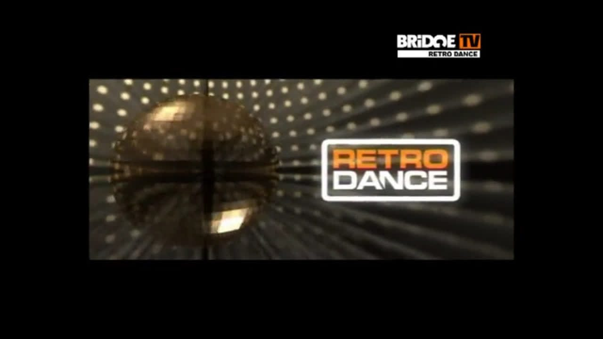
Retro Dance
Заставка программы с логотипом BRIDGE TV в углу.
Логотипы, заставки, титры и кадры эфира BRIDGE TV разных лет.

Заставка программы с логотипом BRIDGE TV в углу.
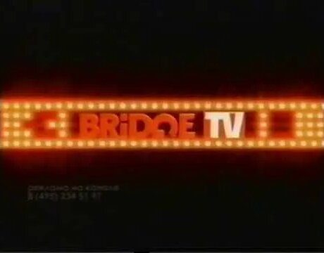
Заставка BRIDGE TV из светящихся ламп.
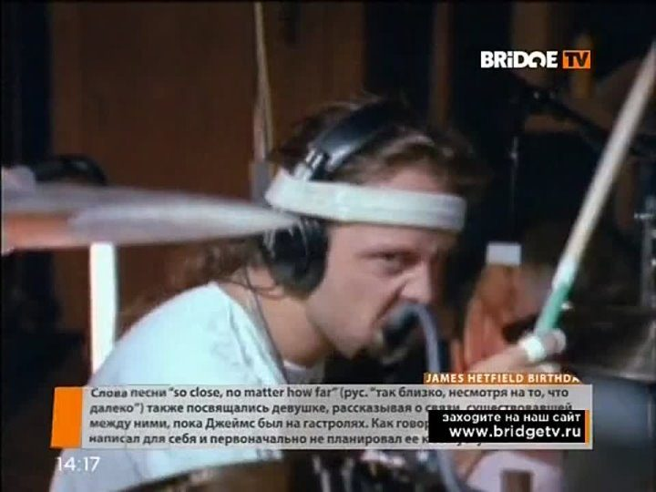
Клип с новостной плашкой и адресом сайта канала.
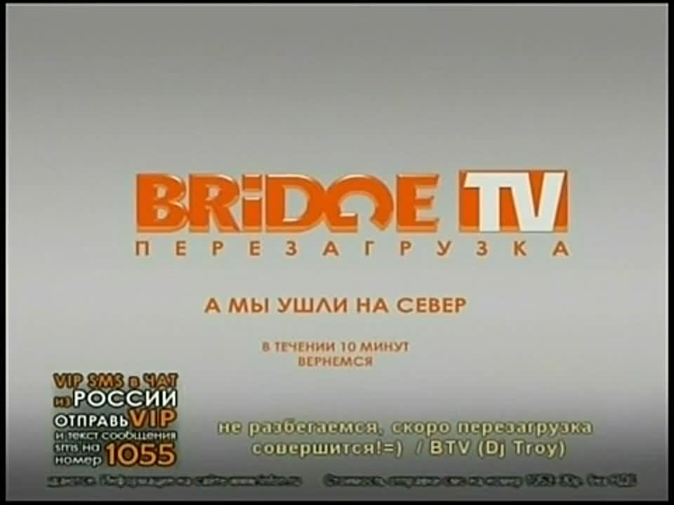
Экран «А мы ушли на север — в течение 10 минут вернёмся» с SMS-чатом и подписью диджея.
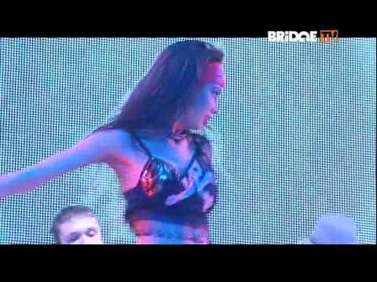
Кадр клипа с логотипом BRIDGE TV в углу экрана.
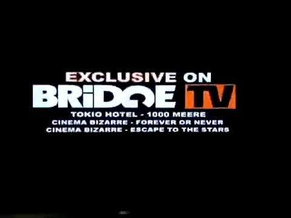
Плашка эксклюзивной премьеры клипов.
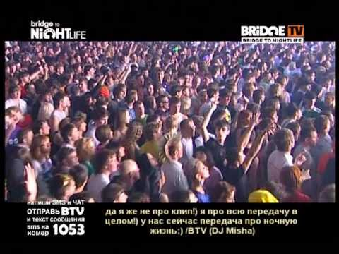
Клубный блок с SMS-чатом на экране.
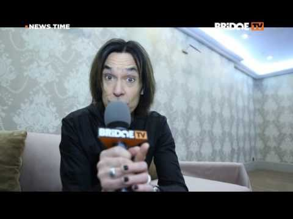
Музыкальные новости: ведущий с микрофоном BRIDGE TV.
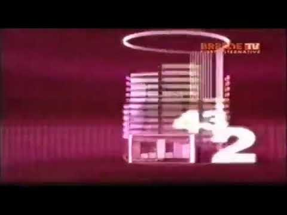
Заставка с городом на фиолетовом фоне.
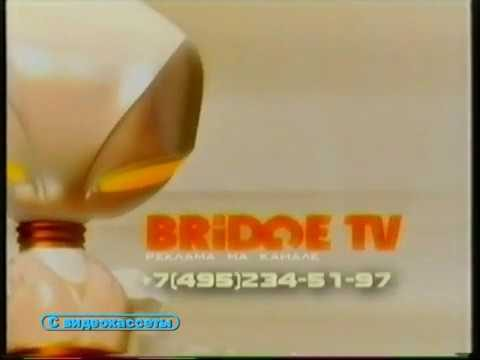
Заставка рекламного блока с телефоном отдела рекламы (запись с видеокассеты).
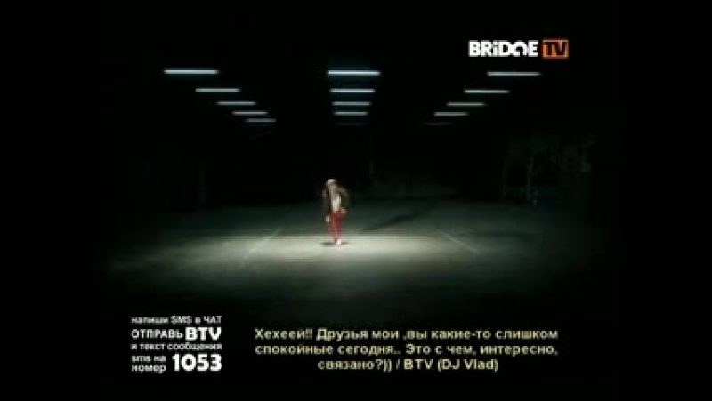
Сообщения зрителей и подписи диджеев поверх клипа.
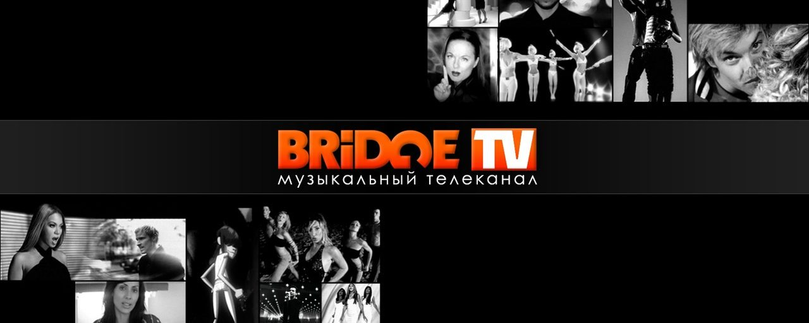
Логотип BRIDGE TV с подписью «Музыкальный телеканал» и коллажем из артистов.
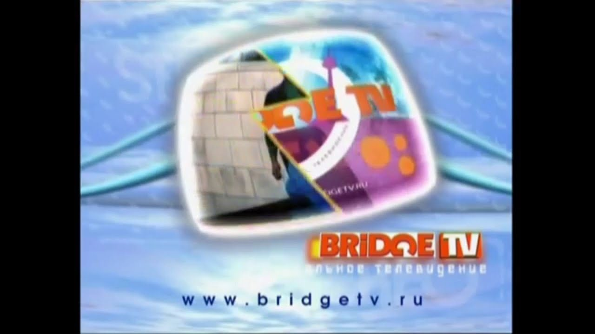
Заставка с логотипом BRIDGE TV и адресом сайта.
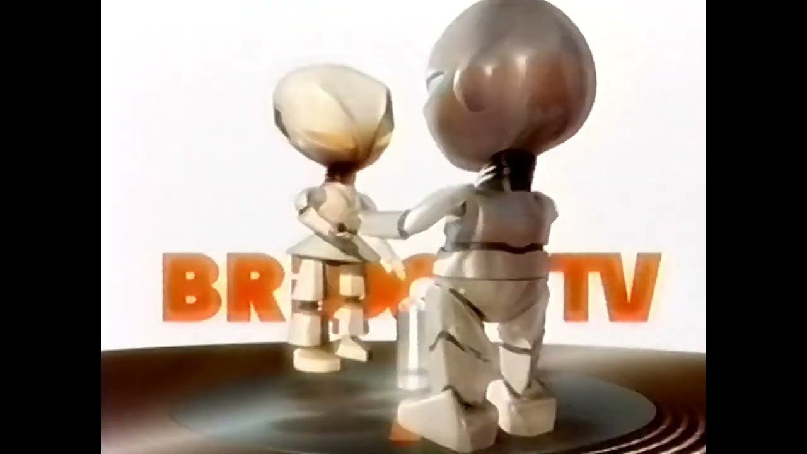
Двое роботов на фоне логотипа BRIDGE TV.
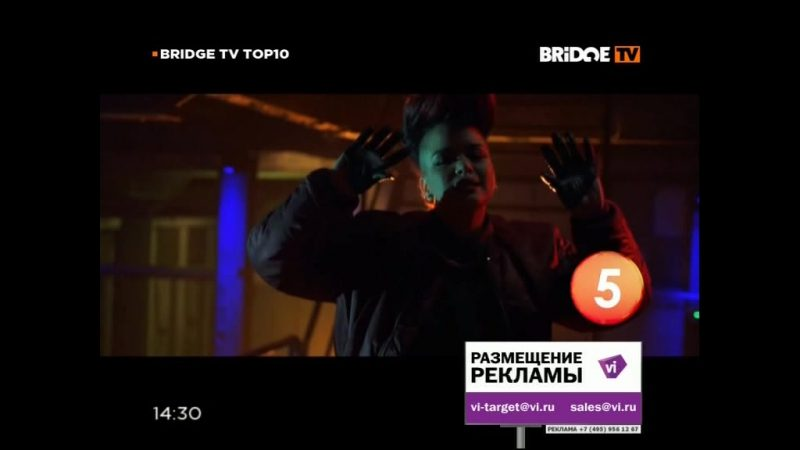
Кадр хит-парада с плашкой «Размещение рекламы».